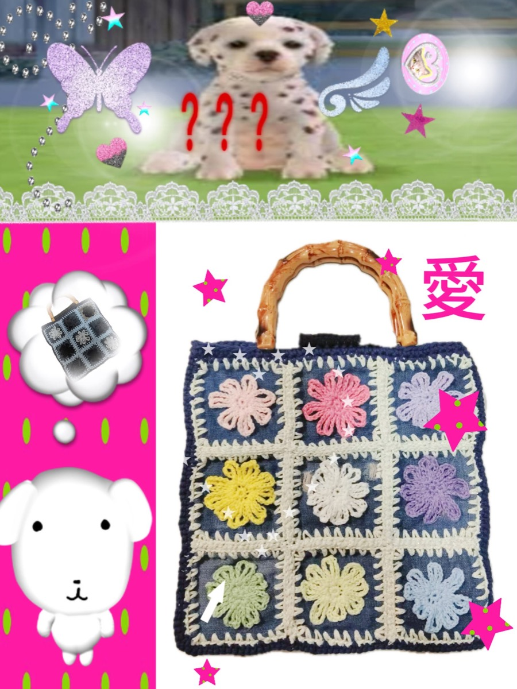
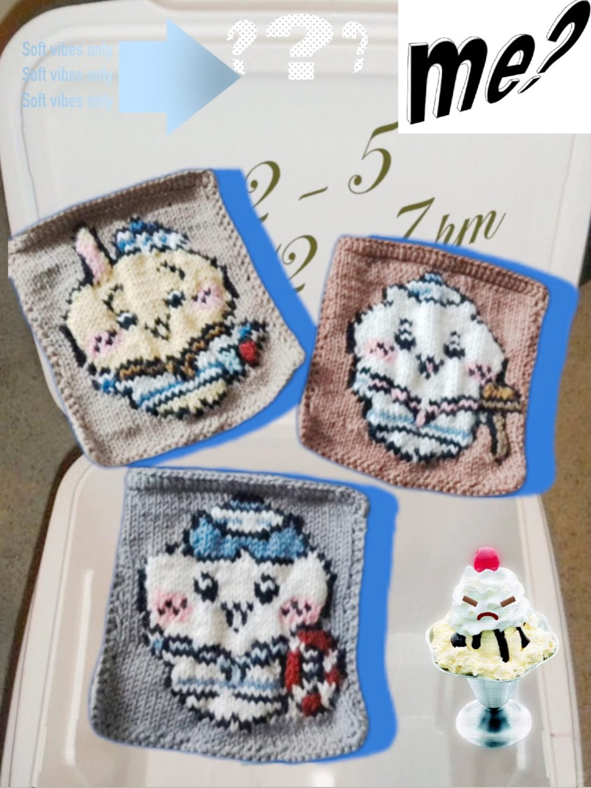
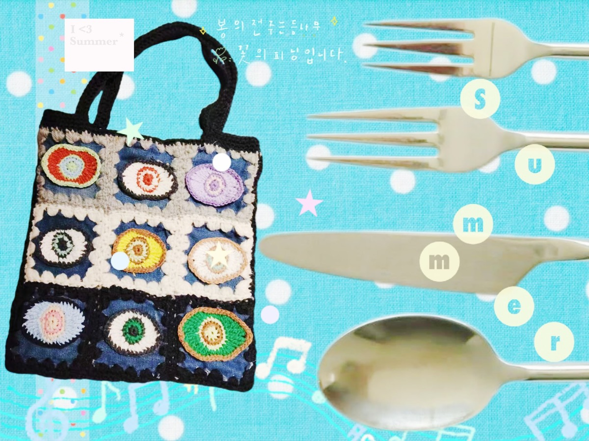
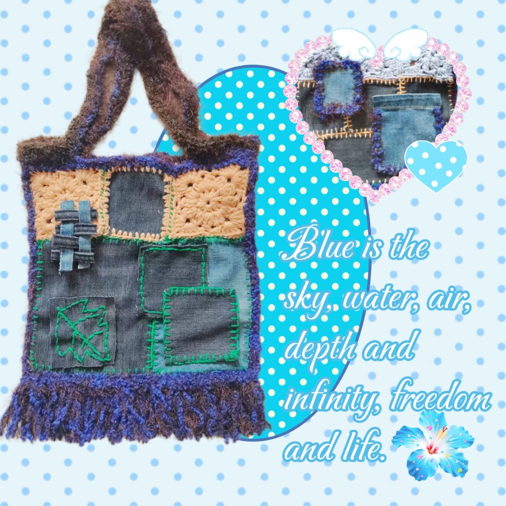
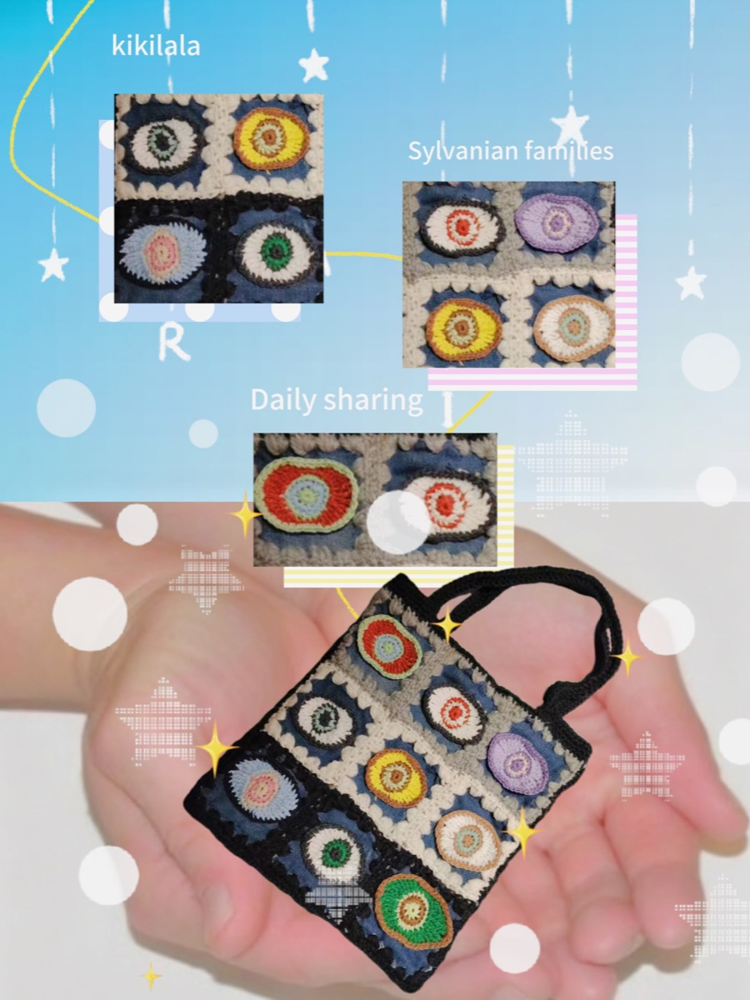

やさしく、楽しく
モルモットのような親しみやすさと、見た瞬間に心が弾むデザインを目指しています。
遊び心のある、一点物のかぎ針編みバッグと小物をつくっています。色やモチーフを自由に組み合わせ、一つひとつ手作業で仕上げる小さなハンドメイドブランドです。
持つ人が「これは私らしい」と笑顔になれる、特別な一点との出会いを大切にしています。

Apunokagiらしさをつくる、三つの大切なこと。
モルモットのような親しみやすさと、見た瞬間に心が弾むデザインを目指しています。
毛糸選びから仕上げまで手作業。手編みならではの表情を大切にしています。
同じものをたくさんつくらず、「私らしい」と思える一点との出会いを届けます。
ふんわりした手触りに、大胆な色。どこか懐かしい編み目に、今の気分。Apunokagiは、違う魅力が一緒にあるときに生まれる、ときめきを大切にしています。
モルモットのような親しみやすさと、持つ人の個性を引き立てる自由なデザイン。一見正反対に見えるものを、色とモチーフでつなぐ。それが、私たちらしいものづくりです。
“かわいい”を、誰かと同じになるためではなく、もっと自分らしくなるために。
気取らず、毎日に寄り添う。モルモットのようなやさしい空気を、ブランドのすべてに。
「無難」よりも、心が動く色を。持つ人の好きな気持ちを、自由な配色で応援します。
わずかな編み目の表情も、その作品が人の手から生まれた証。ひとつだけの個性として大切にします。

素材は、完成した形を支えるだけのものではありません。色の重なり、やわらかな手触り、編み目に生まれる陰影。その小さな違いが、Apunokagiの一点物らしさをつくります。
決まった配色を繰り返すのではなく、手元にある糸を見比べながら、その瞬間に心が動く組み合わせを選びます。
一目ずつ編むことで生まれる、わずかなリズムや立体感。均一すぎない温かさも、手仕事のしるしです。
糸の色や質感、モチーフの並び方によって、作品の表情は少しずつ変わります。だから、手にする一点がその人だけの出会いになります。
同じ毎日でも、好きなものを持つだけで心は少し軽くなる。Apunokagiが届けたいのは、便利な道具だけではなく、見るたびにうれしくなる小さな相棒です。



かわいいだけで終わらず、あなたの毎日に馴染み、持つたびに気持ちを上向きにするもの。たくさんの人に同じものを届けるのではなく、ひとつの作品と、ひとりの「好き」が出会う瞬間を大切にしています。
ひと目でApunokagiとわかる、私たちの世界をつくる四つのサイン。
親しみやすく、ほっとするブランドの表情。
持つ人の個性を引き立てる自由な配色。
機械にはない、一目一目の豊かな表情。
大量生産では出会えない、あなただけの一点。
Apunokagiの作品は、日常にも特別な日にも寄り添います。
いつものコーデに、楽しいアクセントを。
必要なものと、ときめきを一緒に。
「あなたを想って選んだ」が伝わる一点。
がんばった自分に、長く愛せる特別を。
Minneの最新在庫を表示しています。探しているものから、あなたらしい一点を見つけてください。
最新在庫、送料、決済はApunokagiのMinneショップでご確認いただけます。
カテゴリーを選ぶと、販売中の作品をすぐに絞り込めます。
🔎写真・サイズ・素材・送料を確認するには、各作品の「Minneで詳細・購入」を開いてください。
少しだけお待ちください。
最新在庫と送料をご確認のうえ、Minneの安全な決済でご購入いただけます。
初めての方にも安心して選んでいただけるよう、作品ごとに実用的な情報をお伝えします。
横幅・高さ・マチ・持ち手の長さ・重さをcmとgで表示します。
スマートフォン、財布、鍵など、確認できた収納例だけをご案内します。
素材、内布、ポケット、開閉方法、お手入れ方法を分かりやすく表示します。
ご購入者様から届いた本物のご感想を、許可をいただいたものからご紹介します。
すべての作品は、色を選ぶところから始まります。
色とモチーフの組み合わせを考えます。
一目ずつ、手作業で編み進めます。
パーツをつなぎ、バッグや小物に仕立てます。
仕上がりを確認し、丁寧に梱包します。
かぎ針編みを楽しむ方へ。基本の形から始められる、オリジナルのミニパターンです。
並太コットン糸の基本コースター。仕上がり目安：約10cm。
バッグや小物のワンポイントに。仕上がり目安：約8cm。
配色を楽しむ定番モチーフ。仕上がり目安：約9cm。
ギフトやバッグにつけられるミニモチーフ。仕上がり目安：約6cm。
花モチーフと組み合わせやすい小さな葉。仕上がり目安：約8cm。
ヘア小物やラッピングのアクセントに。仕上がり目安：約7cm。
個人利用向けの無料オリジナルパターンです。Instagramで @apunokagi をタグしていただけたら、作品を見に行きます。
作品が生まれる途中も、完成した瞬間も。小さなお店の日々をいちばん近くでご覧いただけます。
Instagramでは、制作風景、新作、在庫のお知らせ、手編みバッグと小物の紹介を更新しています。
💌 商品についてのご質問はInstagramのDMからお気軽にどうぞ。
ブランドの物語が伝わる、お気に入りの作品写真を選びました。最新作はInstagramでご覧ください。
販売と決済はMinneで行います。作品の最新情報をご確認のうえ、安心してお手続きください。
下のボタンからApunokagiのショップへ移動します。
写真、サイズ、仕様、送料、最新在庫をご確認ください。
Minneの商品ページから購入手続きを進めます。
ご注文確認後、3日以内を目安に発送します。
多くの作品は現品限りです。最新の在庫はMinneの商品ページをご確認ください。
サイトの商品カードと各Minne商品ページに、横幅・高さ・マチ・持ち手またはストラップの長さを表示します。
実際に収納を確認した物だけを各商品ページに記載します。気になる物が入るか不明な場合は、ご購入前にお問い合わせください。
ご注文確認後、3日以内を目安に発送します。送料と配送方法は各商品ページに表示されます。
はい。販売と決済はMinne上で行われます。購入ボタンからMinneの商品ページへ進んでお手続きください。
Minneからの発送は日本国内限定です。海外からのご希望は、ご購入前にInstagramのDMでご相談ください。
はい。Minneの「質問」またはInstagramのDMからお問い合わせください。
販売中の作品はMinneで。新作と制作の様子はInstagramでご覧いただけます。